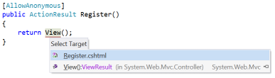

Reference Providers are a very powerful extension mechanism in ReSharper. They are used to create a reference from one node in the PSI abstract syntax tree (AST) to another, either in the same file, or in separate files.
ReSharper uses these references in lots of different ways:
Given this list, one obvious usage for references is code elements, such as method or variable names. It's easy to see how a variable name could have a reference to the variable declaration. ReSharper can resolve the reference, and use this target for navigation, or find usage results. It can tell the reference to rename the element it's attached to, or, if the reference can't find the target, show the attached element as an error.
One slightly less obvious, but just as powerful, mechanism is to attach references to other elements in the syntax tree, such as xml doc comments, or even string literals. This allows so called "magic strings" to take part in Ctrl+Click navigation, find usages, code completion and more importantly, rename refactorings. References can even be applied to parts of a tree node, which allows for references on a single word within a string literal or other node.
For example, references are used with ASP.NET MVC's view and action names. Ctrl+Click on the string literal will navigate to the view, or the action's controller method.

References are evaluated on-demand. They do not maintain a direct relationship with their target, but need to be resolved before they can be used. Resolving can fail, in which case the reference is deemed to be invalid, and the attached element marked as an error.
A reference provider starts life as an instance of IReferenceProviderFactory, which in turn creates an instance of IReferenceFactory for a given file. The IReferenceFactory then creates one or more instances of IReference for any given node in the PSI tree.
The main entry point to providing references is a class that implements IReferenceProviderFactory. The class should be marked with the ReferenceProviderFactoryAttribute, which is a SolutionComponentAttribute, meaning the class is instantiated once per solution (and destroyed when the solution is closed). The class should implement the following members:
public interface IReferenceProviderFactory
{
IReferenceFactory CreateFactory(IPsiSourceFile sourceFile, IFile file);
event Action OnChanged;
}
The CreateFactory method receives both the IPsiSourceFile object that provides metadata about the file, and the IFile object which is the root of the PSI tree. It can use these files to decide if it supports creating references for this file type. For example, it can look at the language of the file:
if (sourceFile.PrimaryPsiLanguage.Is<CSharpLanguage>())
return new MyReferenceFactory();
return null;
If the file language is supported, the IReferenceFactory is created and returned. If not, null is returned, indicating this reference provider doesn't provide references in this case.
The IReferenceProviderFactory interface also provides an OnChanged event. ReSharper subscribes to this event, and will recreate any associated references when it's fired. This is useful if, for example, your reference provider could be disabled by a flag on an options page.
The IRefrenceProviderFactory returns an instance of IReferenceFactory for a particular PSI file. This class is responsible for creating one or more reference for a given node in the file. It has two methods:
public interface IReferenceFactory
{
IReference[] GetReferences(ITreeNode element, IReference[] oldReferences);
bool HasReference(ITreeNode element, ICollection<string> names);
}
Before references are created, the HasReferences method is called, passing in the ITreeNode that is to be the source of the reference, e.g. the variable or string literal, etc. The collection of names that is passed in is used to help validate the cached references - if the node doesn't have any references by that name, the cached references don't have to be recreated, even if the PSI tree has been changed and the cache is (strictly speaking) outdated.
The implementation of HasReferences is usually very straightforward. A reference can have one or more names. Usually, it has just one name - the text of the PSI node. For example, a reference added to a method invocation would have the name of the method as the reference name. A reference might have more than one name, in the case where an element can be referred to in multiple ways, such as "TestAttribute" can be used as [TestAttribute] or [Test].
We'll use the example of a reference provider adding a reference between a string literal and a property name, to support nunit's [TestCaseSource("MyProperty")] attribute. Here's the implementation of HasReferences:
public bool HasReference(ITreeNode element, ICollection<string> names)
{
// Check it's a string literal, and the text of the
// string literal is in the collection of names
var literal = element as ILiteralExpression;
if (literal != null && literal.ConstantValue.Value is string)
return names.Contains((string) literal.ConstantValue.Value);
return false;
}
Note that this implementation doesn't do an exhaustive check - it's looking that the node is a string literal, but not that it's a string literal inside an attribute declaration where the attribute name is TestCaseSourceAttribute. It's simply a quick check to try and short circuit unnecessary cache revalidation.
If the consumer doesn't pass in a collection of names, HasReferences isn't called, and the cached references are used, or recalculated.
To actually get the references, ReSharper calls GetReferences. It passes in the PSI tree node, and an array of existing references, and expects an array of references to be returned. Taking our example of nunit's [TestCaseSource("MyProperty"]), the code to create a reference between the string literal "MyProperty" and the property on the current class called "MyProperty" would look something like:
public static readonly ClrTypeName TestCaseSourceAttribute =
new ClrTypeName("NUnit.Framework.TestCaseSourceAttribute");
public IReference[] GetReferences(ITreeNode element, IReference[] oldReferences)
{
var literal = element as ILiteralExpression;
if (literal != null && literal.ConstantValue.Value is string)
{
var argumentExpression = literal as ICSharpExpression
var attribute = AttributeNavigator.GetByConstructorArgumentExpression(argumentExpression);
if (attribute != null)
{
var @class = attribute.Name.Reference.Resolve().DeclaredElement as IClass;
if (@class != null
&& Equals(@class.GetClrName(), TestCaseSourceAttribute))
{
var method = MethodDeclarationNavigator.GetByAttribute(attribute);
if (method != null && method.DeclaredElement != null
&& typeElement == null)
{
typeElement = method.DeclaredElement.GetContainingType();
}
if (typeElement != null)
{
return new IReference[]
{
new PropertyDataReference(typeElement, literal)
};
}
}
}
}
return EmptyArray<IReference>.Instance;
}
The process breaks down like this:
AttributeNavigator to find an attribute, given an argument in the constructor. This walks up the PSI tree from the string literal, looking for an attribute usage. It it fails to find the attribute, it returns nullName property, which is itself a reference to the TestCaseSourceAttribute class. Resolve the reference, get the declared element and ensure the attribute is an instance of NUnit.Framework.TestCaseSourceAttributeMethodDeclarationNavigator to find the method declaration that the attribute is applied toPropertyDataReference (detailed in the next section), passing in the class declaration and the string literal nodeNote that this method doesn't try to resolve the reference - it doesn't look to see if the property named by the string literal exists on the type. This is handled by the reference. If it can't be resolved, the reference is invalid, and ReSharper will mark the string literal as an unresolved error.
Also note that this implementation doesn't make use of the oldReferences parameter. Ideally, the reference provider should examine the old references to see if they are still valid. What this means depends on the context of the reference. In this instance, we can check that the old reference's string literal is the same value, and the type element is still valid. In that case, we could just return the old references directly. An alternative strategy is to create the new references and compare before returning. If the old references are the same, return the old reference instances.
Finally, it is perfectly acceptable to return more than one reference, if there can be multiple targets for the element, or the node can be broken into substrings that can be references. For example, the MVC View() method could have multiple references, one to the definition of the method View and one to the view associated with the containing controller method. If there are multiple references on a single element, when hitting Ctrl+Click, ReSharper will show a popup menu with a choice of target for navigation. Similarly, a file path reference provider, which is applied to a string literal representing a file path, returns a new reference for each path segment. That is, "C:\work\projects\foo.txt" returns 4 references, one for each path segment.
(Also note that this is an incomplete implementation of support for TestCaseSourceAttribute. It should also support the SourceType value to allow the property to be defined on a different class. To do this, you would find an ITypeofExpression and use that to get the type element passed to the reference.)
The IReference interface has the following structure:
public interface IReference : IUserDataHolder
{
bool HasMultipleNames { get; }
ResolveResultWithInfo CurrentResolveResult { get; set; }
ITreeNode GetTreeNode();
string GetName();
IEnumerable<string> GetAllNames();
ISymbolTable GetReferenceSymbolTable(bool useReferenceName);
ResolveResultWithInfo Resolve();
TreeTextRange GetTreeTextRange();
IReference BindTo(IDeclaredElement element);
IReference BindTo(IDeclaredElement element, ISubstitution substitution);
IAccessContext GetAccessContext();
bool IsValid();
}
Resolve and CurrentResolveResult are used to find the target of the reference. They return a ResolveResultWithInfo that contains the result (OK or NOT_RESOLVED, etc) and information, such as the IDeclaredElement that is the targetHasMultipleNames and GetAllNames allow the reference to have more than one name. Normally, the reference will only have one name, which will correspond to the text of the owner element (one exception to this is a constructor initialiser, which has a name of this or base). However, references to attributes can have multiple names - an attribute can be used either as [Test] or [TestAttribute]. In this case HasMultipleNames should return true, and GetAllNames should include the full name and the truncated nameGetTreeNode and GetTreeTextRange return the node from the tree and the range within the tree that is the source of the reference. Usually, this is the range of the node of the tree - GetTreeNode().GetTreeTextRange(). However, it is possible to return a different range here to allow for a reference to be a substring of the node, such as single word in a string literalGetReferenceSymbolTable should return an instance of ISymbolTable that contains symbols relevant to the reference. Using the TestCaseSourceAttribute example, this will return all symbols for the type that the attribute is concerned with. If you pass true for the useReferenceName parameter, the symbols are filtered down to match the name(s) of the referenceGetAccessContext returns an instance of IAccessContext. This can usually be deferred to a new instance of ElementAccessContext, passing in the owner tree nodeBindTo allows references to take part in rename refactorings. The reference is bound to the new element in the PSI tree, created with the new name. It should update its owner element to reflect this change.Normally, it is not necessary to implement the whole interface, but derive from a base class, such as TreeReferenceBase<TOwnerElement>. This takes the type of the owner element as a type parameter, such as TreeReferenceBase<ILiteralExpression>. It also maintains the cached results of a call to Resolve.
When implementing a class deriving from TreeReferenceBase, the most interesting method to implement is ResolveWithoutCache. For our TestCaseSourceAttribute example, the implementation looks like this:
public override ResolveResultWithInfo ResolveWithoutCache()
{
return GetReferenceSymbolTable(true).GetResolveResult(GetName());
}
This defers to GetReferenceSymbolTable, passing in true to filter the symbol table down to just those symbols that match the reference name. It then uses the ISymbolTable.GetResolveResult method to get a ResolveResultWithInfo instance for the reference name. The ResolveResultWithInfo class maintains a result, plus an error type. The result gives access to the declared element, or candidates if more than one possible value was found. The error type uses the ResolveErrorType enum pattern class, and can be one of many values. The most popular include ResolveErrorType.OK, ResolveErrorType.IGNORABLE, ResolveErrorType.NOT_RESOLVED and so on. There are also sub-types of ResolveErrorType that provide more explicit errors, such as CSharpResolveErrorType.OPERATOR_IS_NOT_APPLICABLE or CssResolveErrorType.CLASS_NOT_RESOLVED. Which value you use depends on your situation - you can either just use the value returned from the ISymbolTable, or use one of the predefined errors in ResolveErrorType and derived classes.
If the value isn't ResolveErrorType.OK, it is considered to be an invalid reference, and the owner tree node will be marked as an error.
Once the ResolveWithoutCache method has been called, the value is stored in CurrentResolveResult until the owner tree node changes.
This method should return a symbol table with all symbols relevant for the reference. If the useReferenceName parameter is false, it should return a set of candidates that could be used as the target for the reference. For example, in our TestCaseSourceAttribute reference, we could implement it like this:
public override ISymbolTable GetReferenceSymbolTable(bool useReferenceName)
{
var symbolTable = ResolveUtil
.GetSymbolTableByTypeElement(typeElement,
SymbolTableMode.FULL,
typeElement.Module);
symbolTable = symbolTable.Distinct().Filter(propertyFilter);
return useReferenceName
? symbolTable.Filter(GetName(), exactNameFilter)
: symbolTable;
}
This uses the ResolveUtil.GetSymbolTableByElement method to retrieve a full symbol table for the class that declares the property we're looking for. We then ensure we're dealing with a distinct set of symbols, and filter using our propertyFilter. This is a field set up with a new PredicateFilter(FilterToApplicableProperties). The method FilterToApplicableProperties takes in a symbol, gets the declared element and checks to see if it's applicable - is it a property, public, has the right signature and so on.
Once we have our symbol table, we further filter it if useReferenceName is true. If so, we only get any symbols that match the name of the reference, using a new ExactNameFilter.
When an item is renamed its element is recreated and replaced in the tree. The references that target it are then updated, by calling BindTo, passing in the new IDeclaredElement instance. The reference needs to update the owner tree node, and return a potentially new reference to reflect the change. The implementation is quite straightforward. Again, using our TestCaseSourceAttribute example:
public override IReference BindTo(IDeclaredElement element)
{
var literalAlterer = StringLiteralAltererUtil
.CreateStringLiteralByExpression(myOwner);
literalAlterer.Replace((string) myOwner.ConstantValue.Value,
element.ShortName, myOwner.GetPsiModule());
var newOwner = literalAlterer.Expression;
if (!myOwner.Equals(newOwner))
return newOwner.FindReference<PropertyDataReference>() ?? this;
return this;
}
This uses the StringLiteralAltererUtil class to create an instance of IStringLiteralAlterer. Calling Replace will replace the existing string literal element in the tree. The literal alterer's Expression property is the new ILiteralExpression node in the tree. If the owners are different (they might be altered in place), we look for a new reference applied to the node (ReSharper will usually set this up when the new literal expression is created) and return it, otherwise we return the current reference.